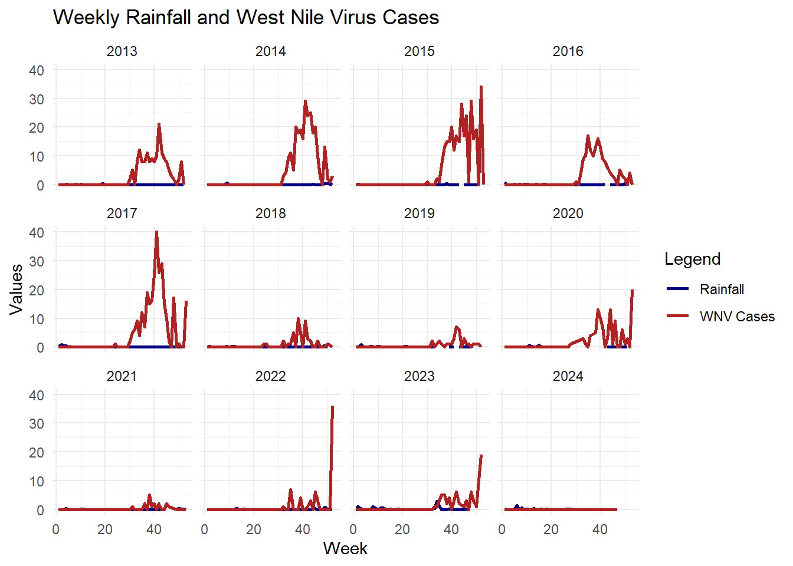

Analyzing the Relationship Between Rainfall and West Nile Virus Cases in LA County
What is West Nile Virus?
West Nile Virus (WNV) is the most common mosquito-transmitted virus in the United States. It is primarily spread through the bite of infected mosquitoes, and although most people who get infected with the virus experience mild symptoms, approximately 1 in 5 individuals will develop symptoms such as fever, headache, vomiting, or a rash. In rare cases, about 1 in 150 infected individuals will develop more serious conditions, such as encephalitis or meningitis, which can be life-threatening.
Past Research:
Past studies suggest that weather patterns, specifically rainfall and temperature, can influence the incidence of WNV cases. Heavy rainfall, in particular, has been linked to an increase in the number of reported cases. For example, past research (Soverow et al., 2009) has shown that rainfall within a week can be associated with a 29–66% increase in the incidence of WNV in the following weeks. However, other studies indicate that temperature may be a stronger predictor than rainfall in determining the risk of infection (Shand et al., 2016).
For this analysis, I decided to focus on Los Angeles County and analyze whether recent rainfall patterns correlate with WNV cases over a 10-year period from 2013 to 2023.
Null Hypothesis (H₀): There is no relationship between precipitation and reported WNV cases. Alternative Hypothesis (H₁): Higher levels of rainfall will be associated with more reported WNV cases.
Data Sources
The data for this analysis comes from two sources:
West Nile Virus Cases: Reported by the California Department of Public Health, covering 2006 to 2024. https://data.chhs.ca.gov/dataset/west-nile-virus-cases-2006-present
Rainfall Data: Rainfall data for Arcadia, a city in LA County, was used to estimate average weekly precipitation.
West Nile Cases In California: is recent rain or old rain a better predictor
# Load in librarieslibrary(tidyverse)
── Attaching core tidyverse packages ──────────────────────── tidyverse 2.0.0 ──
✔ dplyr 1.1.4 ✔ readr 2.1.5
✔ forcats 1.0.0 ✔ stringr 1.5.1
✔ ggplot2 3.5.1 ✔ tibble 3.2.1
✔ lubridate 1.9.3 ✔ tidyr 1.3.1
✔ purrr 1.0.2
── Conflicts ────────────────────────────────────────── tidyverse_conflicts() ──
✖ dplyr::filter() masks stats::filter()
✖ dplyr::lag() masks stats::lag()
ℹ Use the conflicted package (<http://conflicted.r-lib.org/>) to force all conflicts to become errors
library(here)
here() starts at C:/MEDS/eds222/eds222_final_project
library(dplyr)library(janitor)
Attaching package: 'janitor'
The following objects are masked from 'package:stats':
chisq.test, fisher.test
library(lubridate)
# Read in datawnv_cases <-read_csv(here('data', 'vendor.csv'))
Rows: 2471 Columns: 4
── Column specification ────────────────────────────────────────────────────────
Delimiter: ","
chr (1): County
dbl (3): Year, Week, Reported Positive Cases
ℹ Use `spec()` to retrieve the full column specification for this data.
ℹ Specify the column types or set `show_col_types = FALSE` to quiet this message.
arcadia <-read_csv(here('data', '3862608.csv'))
Rows: 3543 Columns: 7
── Column specification ────────────────────────────────────────────────────────
Delimiter: ","
chr (2): STATION, NAME
dbl (4): DAPR, MDPR, PRCP, SNOW
date (1): DATE
ℹ Use `spec()` to retrieve the full column specification for this data.
ℹ Specify the column types or set `show_col_types = FALSE` to quiet this message.
Data Cleaning and Preparation
1. WNV Cases Data
Renaming Columns: Standardized column names for easier manipulation.
Filtering Data: Focused analysis on Los Angeles County (2013–2023).
# Filter for years and countywnv_cases_la <- wnv_cases %>%filter(county =="Los Angeles", year >=2013, year <=2023)
2. Rainfall Data
Date Processing: Extracted year and week number from daily rainfall data.
# Extract week number arcadia <- arcadia %>%mutate(week =isoweek(DATE), year =year(DATE))
Weekly Averages: Calculated average rainfall for each week.
# Calculate average rainfall for weekarcadia_avg <- arcadia %>%group_by(year, week) %>%summarize(avg_weekly_prcp =mean(PRCP, na.rm =TRUE))
`summarise()` has grouped output by 'year'. You can override using the
`.groups` argument.
3. Joining Datasets
Merged rainfall and WNV cases data by year and week.
Missing weeks in the WNV dataset were filled with 0 cases, assuming no cases were reported in those weeks.
# Merge rainfall and WNV cases by year and week and make missing weeks 0wnv_precip <-full_join(wnv_cases_la, arcadia_avg, by =c("year", "week")) %>%mutate(reported_positive_cases =replace_na(reported_positive_cases, 0),county =replace_na(county, "Los Angeles") )
Exploratory Data Analysis
ggplot(wnv_cases_la, aes(x = week, y = reported_positive_cases)) +geom_smooth(method ="lm", color ="navy", se =FALSE) +geom_point(color ="firebrick") +theme_minimal() +labs(title ="Reported West Nile Virus Cases by Week in Los Angeles County",x ="Week of the Year",y ="Number of Reported Cases" )
`geom_smooth()` using formula = 'y ~ x'
1. Trends in Rainfall and WNV Cases
Visualized weekly rainfall and WNV cases over time, grouped by year.
ggplot(wnv_precip, aes(x = week, group = year)) +geom_line(aes(y = avg_weekly_prcp, color ="Rainfall"), size =1) +geom_line(aes(y = reported_positive_cases, color ="WNV Cases"), size =1) +facet_wrap(~ year) +labs(x ="Week",y ="Values",title ="Weekly Rainfall and West Nile Virus Cases",color ="Legend" ) +scale_color_manual(values =c("Rainfall"="navy", "WNV Cases"="firebrick")) +theme_minimal()
Warning: Using `size` aesthetic for lines was deprecated in ggplot2 3.4.0.
ℹ Please use `linewidth` instead.
Warning: Removed 4 rows containing missing values or values outside the scale range
(`geom_line()`).

2. Autocorrelation of WNV Cases
Computed the autocorrelation function (ACF) to determine if WNV cases exhibit temporal dependencies.
acf(wnv_precip$reported_positive_cases, na.action = na.pass, main ="ACF of WNV Cases")
# Fit a linear model between rainfall and WNV casesrain_case_model <-lm(reported_positive_cases ~ avg_weekly_prcp, data = wnv_precip)# Summary of the model to check coefficients and significancesummary(rain_case_model)
Call:
lm(formula = reported_positive_cases ~ avg_weekly_prcp, data = wnv_precip)
Residuals:
Min 1Q Median 3Q Max
-2.411 -2.411 -2.395 -1.383 37.589
Coefficients:
Estimate Std. Error t value Pr(>|t|)
(Intercept) 2.4113 0.2507 9.618 <2e-16 ***
avg_weekly_prcp -1.3915 1.2687 -1.097 0.273
---
Signif. codes: 0 '***' 0.001 '**' 0.01 '*' 0.05 '.' 0.1 ' ' 1
Residual standard error: 5.633 on 547 degrees of freedom
(35 observations deleted due to missingness)
Multiple R-squared: 0.002194, Adjusted R-squared: 0.0003703
F-statistic: 1.203 on 1 and 547 DF, p-value: 0.2732
# Calculate the correlation between rainfall and WNV casescorrelation <-cor(wnv_precip$avg_weekly_prcp, wnv_precip$reported_positive_cases, use ="complete.obs")print(paste("Correlation between rainfall and WNV cases:", correlation))
[1] "Correlation between rainfall and WNV cases: -0.0468444447379296"
# Visualize the relationship with the regression lineggplot(wnv_precip, aes(x = avg_weekly_prcp, y = reported_positive_cases)) +geom_point(color ="firebrick") +geom_smooth(method ="lm", color ="navy", se =FALSE) +labs(title ="Relationship Between Rainfall and West Nile Virus Cases",x ="Average Weekly Rainfall (inches)",y ="Reported Positive WNV Cases" ) +theme_minimal()
`geom_smooth()` using formula = 'y ~ x'
Warning: Removed 35 rows containing non-finite outside the scale range
(`stat_smooth()`).
Warning: Removed 35 rows containing missing values or values outside the scale range
(`geom_point()`).
Modeling the Relationship Between Rainfall and WNV Cases
1. Lagged Variables
Created a lagged rainfall variable to explore delayed effects of precipitation on WNV cases.
Examined the correlation between rainfall 4 weeks prior and WNV cases.
correlation <-cor(wnv_precip$lag_prcp_4weeks, wnv_precip$reported_positive_cases, use ="complete.obs")print(paste("Correlation between rainfall 4 weeks ago and WNV cases:", correlation))
[1] "Correlation between rainfall 4 weeks ago and WNV cases: -0.0669666699724962"
3. Regression Analysis
Fitted a linear model to quantify the relationship between lagged rainfall and WNV cases.
model <-lm(reported_positive_cases ~ lag_prcp_4weeks, data = wnv_precip)summary(model)
Call:
lm(formula = reported_positive_cases ~ lag_prcp_4weeks, data = wnv_precip)
Residuals:
Min 1Q Median 3Q Max
-2.460 -2.460 -2.436 -1.199 37.540
Coefficients:
Estimate Std. Error t value Pr(>|t|)
(Intercept) 2.4597 0.2579 9.536 <2e-16 ***
lag_prcp_4weeks -2.0339 1.3005 -1.564 0.118
---
Signif. codes: 0 '***' 0.001 '**' 0.01 '*' 0.05 '.' 0.1 ' ' 1
Residual standard error: 5.773 on 543 degrees of freedom
(39 observations deleted due to missingness)
Multiple R-squared: 0.004485, Adjusted R-squared: 0.002651
F-statistic: 2.446 on 1 and 543 DF, p-value: 0.1184
4. Visualization of Regression
Visualized the relationship between lagged rainfall and WNV cases.
ggplot(wnv_precip, aes(x = lag_prcp_4weeks, y = reported_positive_cases)) +geom_point() +geom_smooth(method ="lm", color ="navy", se =FALSE) +labs(title ="Relationship Between Rainfall (4 Weeks Ago) and WNV Cases",x ="Average Weekly Rainfall (4 Weeks Ago)",y ="Reported Positive WNV Cases" ) +theme_minimal()
`geom_smooth()` using formula = 'y ~ x'
Warning: Removed 39 rows containing non-finite outside the scale range
(`stat_smooth()`).
Warning: Removed 39 rows containing missing values or values outside the scale range
(`geom_point()`).
Contrary to initial expectations, the data failed to demonstrate a statistically significant relationship between rainfall and West Nile Virus cases. The negative correlation and elevated p-values suggest that precipitation alone may not be a reliable predictor of virus transmission in Los Angeles County. In this analysis, I have failed to reject the null hypothesis.
There are several reason that could account for these surprising results. 1. Small sample size I was only looking at cases in LA county, both of the studies I referenced early had much larger samples to analyze.
Lack of precipitation LA County is a notoriously sunny area, it tends to get very little precipitation year round.
A stronger correlation to temperature Again, referencing back to the studies mentioned earlier, both showed more of a relationship between temperature and the number of reported cases than precipitation.
References
Soverow, J. E., Wellenius, G. A., Fisman, D. N., & Mittleman, M. A. (2009). Infectious disease in a warming world: How weather influenced West Nile Virus in the United States (2001–2005). Environmental Health Perspectives, 117(7), 1049–1052. https://doi.org/10.1289/ehp.0800487
Centers for Disease Control and Prevention. (2024, May 15). About West Nile virus. Centers for Disease Control and Prevention. https://www.cdc.gov/west-nile-virus/about/index.html
Shand, L., Brown, W. M., Chaves, L. F., Goldberg, T. L., Hamer, G. L., Haramis, L., Kitron, U., Walker, E. D., & Ruiz, M. O. (2016). Predicting West Nile virus infection risk from the synergistic effects of rainfall and temperature. Journal of Medical Entomology, 53(4), 1–10. https://doi.org/10.1093/jme/tjw042